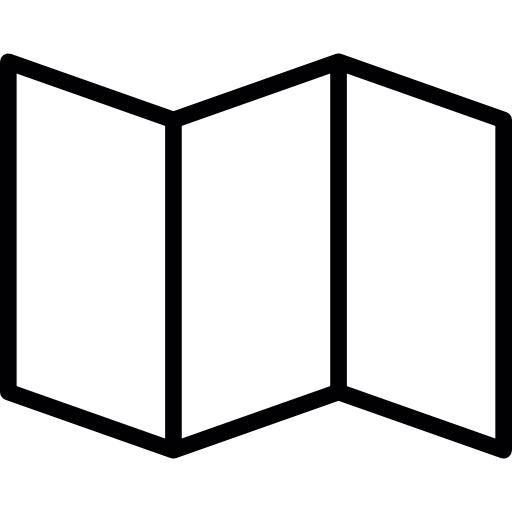
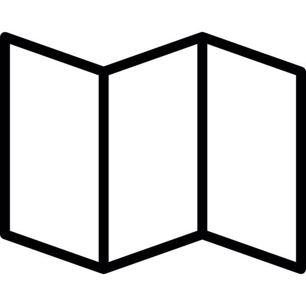

Památná hora Říp patří mezi několik nejvýznamnějších míst a symbolů naší národní historie. Vztahuje se k ní základní pověst o příchodu našich předků do země.
Čedicová kupa hory Říp (456 m n. m.), památné místo české historie, je zdaleka viditelná hora cca 5 km od Roudnice nad Labem. Kronikář Dalimil počátkem 14. století uvedl právě horu Říp a její okolí jako místo, kde se usadili první Slované vedení praotcem Čechem při příchodu do nové vlasti. Nová země dostala jméno po vůdci těchto Slovanů Čechovi.
Na vrcholu Řípu leží asi nejznámější románská památka v Čechách rotunda sv. Jiří a sv. Vojtěcha, původně zasvěcená sv. Vojtěchovi. Připomíná se k roku 1126, kdy nechal kníže Soběslav I. na paměť vítězství v bitvě u Chlumce stávající kostelík opravit a rozšířit o západní kruhovou věž. Kostel, jehož zasvěcení bylo mezitím změněno na sv. Jiří, se v 17. a 18. století stal oblíbeným poutním místem.
Každoročně se na Říp vypravuje mnoho průvodů, pochodů a procesí pořádaných různými organizacemi. První neděli v měsíci se v rotundě koná mše svatá od 15 hodin a prohlídky v čase 14:45 – 16:00 nejsou možné. Mimo otevírací dobu je možné rotundu navštívit po předchozí domluvě pro skupinu nejméně 10 platících osob.
HORA ŘÍP

 
